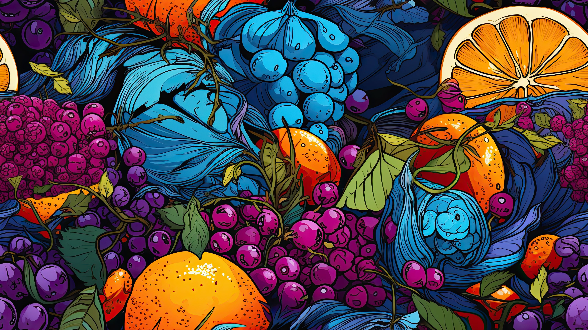

Apa itu kupu-kupu?
Kupu-kupu atau rama-rama merupakan serangga yang tergolong ke dalam ordo Lepidoptera, atau 'serangga bersayap sisik' (lepis, sisik dan pteron, sayap). Kupu-kupu memiliki tubuh ramping, sayap lebar berwarna-warni, dan antena berbentuk tongkat
Secara sederhana, kupu-kupu dibedakan dari ngengat alias kupu-kupu malam berdasarkan waktu aktifnya dan ciri-ciri fisiknya. Kupu-kupu umumnya aktif waktu siang (diurnal), sedangkan ngengat kebanyakan aktif waktu malam (nokturnal). Kupu-kupu
beristirahat atau hinggap dengan menegakkan sayapnya, ngengat hinggap dengan membentangkan sayapnya. Kupu-kupu biasanya memiliki warna yang indah cemerlang, ngengat cenderung gelap, kusam atau kelabu. Meski demikian, perbedaan-perbedaan ini
selalu ada perkecualiannya, sehingga secara ilmiah tidak dapat dijadikan pegangan yang pasti. (Van Mastrigt dan Rosariyanto, 2005).
Manfaat hutan pinus
Manfaat hutan pinus tidak diragukan lagi karena tidak hanya memproduksi kayu kelas kuat III yang masuk kelas awet IV sebagai bahan baku berbagai bangunan konstruksi ringan, mebel, kayu lapis, korek api, pulp, pohon pinus juga menjadi penghasil getah (oleoresin) sebagai bahan baku produk terpentin, resin, gondorukem, cat dan kosmetik. Selain itu, fungsi ekosistem hutan pinus juga banyak dimanfaatkan sebagai lokasi wisata alam.
Kandungan Buah-buahan

Buah-buahan mengandung berbagai nutrisi penting yang bermanfaat untuk kesehatan tubuh. Berikut adalah beberapa kandungan nutrisi umum yang terdapat dalam buah-buahan: Serat: Berperan penting dalam menjaga fungsi saluran pencernaan. Vitamin C: Penting untuk menjaga jaringan tubuh dari kerusakan akibat radikal bebas.
Vitamin A: Penting untuk kesehatan mata, kulit, dan sistem kekebalan tubuh. Folat: Berperan penting dalam pembentukan darah dan materi genetik. Kalium: Dapat membantu menjaga tekanan darah dan fungsi sistem saraf. Mengonsumsi buah-buahan setiap hari memiliki manfaat, seperti mencegah obesitas, menurunkan risiko penyakit,
menjaga kesehatan mata, dan memerangi radikal bebas. Badan Kesehatan Dunia (WHO) merekomendasikan mengonsumsi sekitar 5 porsi buah dan sayur setiap harinya. Anda bisa memilih berbagai jenis buah dengan warna dan tekstur yang berbeda untuk mendapatkan kombinasi nutrisi yang beragam. Pastikan membeli buah yang segar dan
sesuai musim untuk kualitas yang baik.